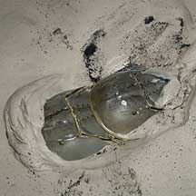
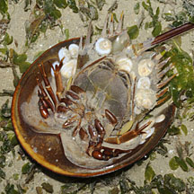
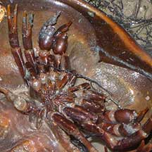

|
|
| arthropods text index | photo index |
| Phylum Arthropoda | Class Merostomata | Order Xiphosura > Family Limulidae |
| Coastal
horseshoe crab Tachypleus gigas Family Limulidae updated Nov 2019 Where seen? This is our larger horseshoe crab and it is sometimes encountered on some of our shores, on sandy shores near reefs and seagrass meadows. They are often seen in pairs, with the smaller male on top of the larger female. Elsewhere it is found in mangroves, sandy beaches and muddy bottoms. Features: Diameter to about 25cm. The circular shell is greyish sometimes brown. Identified by longer spines on the side of the body, the tail is triangular in cross-section near where it joins the body, with a groove on the underside and with a serrated edge on the upperside. The male's special legs for holding on to the female has one 'finger'. Sometimes confused with the Mangrove horseshoe crab (Carcinoscorpius rotundicauda). More on how to tell them apart. |
 Often seen in a pair. Sentosa, Jun 06 |
 Underside with encrusting animals. Changi, Apr 09 |
 Spines on the side of the body longer. |
 Male's special legs for holding onto the female has one 'finger'. |
 Tail with a groove on the underside near the body. |
 Tail near the body is triangular in cross-section with small spines on the upperside. |
| Status and threats: The Coastal
horseshoe crab is listed as 'Endangered' on the Red List of threatened
animals of Singapore. It is mainly threatened by habitat loss. According to the Singapore Red Data Book: "In the last two decades, many good natural shorelines have been developed or 'improved' through a variety of 'beach improvement' schemes, reclamation and other developments, so much so that the Coastal horseshoe crab has become less common and the species should be regarded as endangered in the Singapore context." |
| Coastal horseshoe crabs on Singapore shores |
On wildsingapore
flickr
|
| Other sightings on Singapore shores |
 A male, with its modified first claws. |
|
Links
References
|